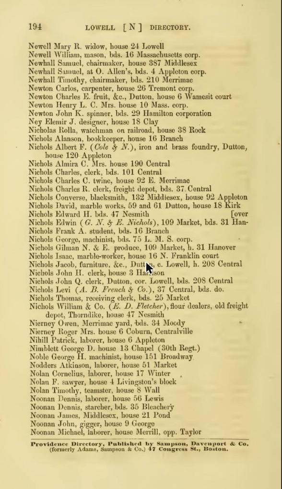

Lowell directory, 1866: Atkinson Nodders, laborer, 51 Market Street
The Lowell Directory 1866, Sampson, Davenport & Co., p. 194 (Internet Archive item lowellma-directory-1866, UMass Lowell collection)

The original record, as it appears in the register or index.
What this document is
A city directory: a yearly book, like a phone book, listing the adults of the city with their work and home address.
What it says
The Lowell Directory 1866 (Sampson, Davenport & Co.), page 194: “Nodders Atkinson, laborer, house 51 Market.” This places Margaret Jane Nodders’s father in Lowell three years before her birth there, and matches the name of the groom in the 1862 Oldham marriage.
Place
51 Market Street, Lowell, Massachusetts
How it was read
proven